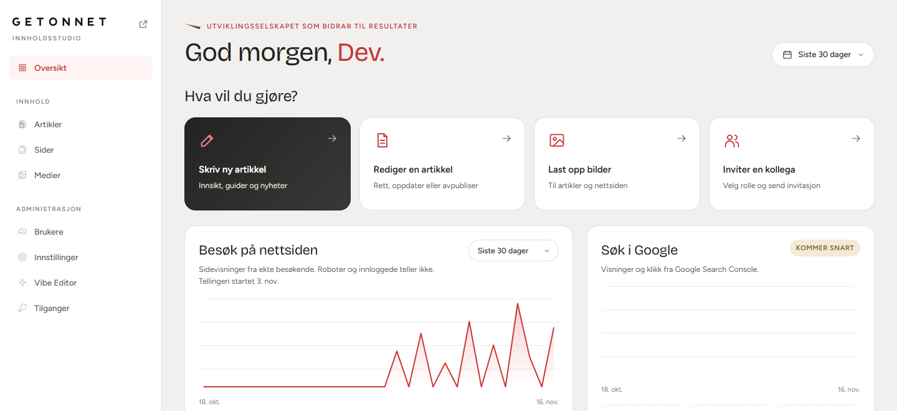
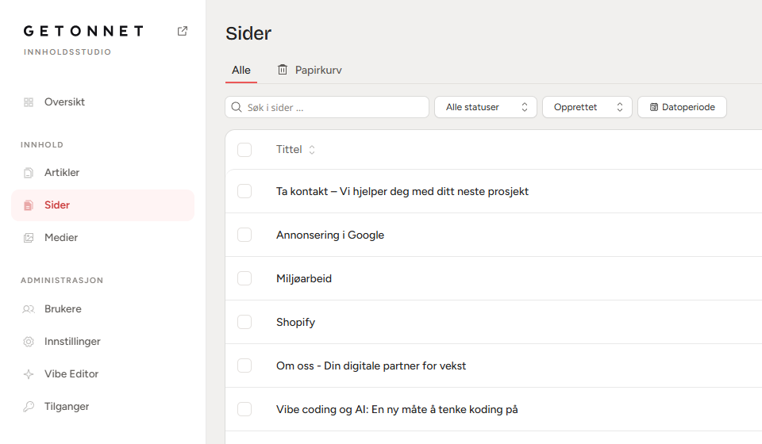
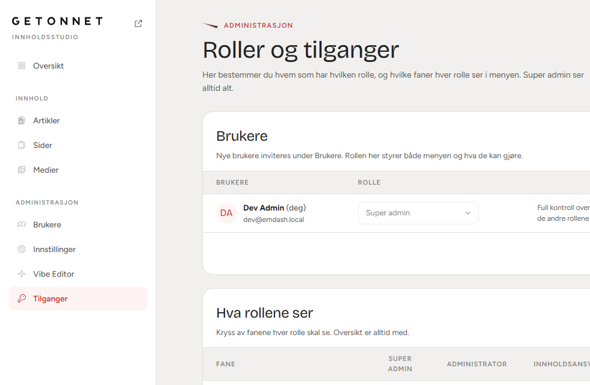
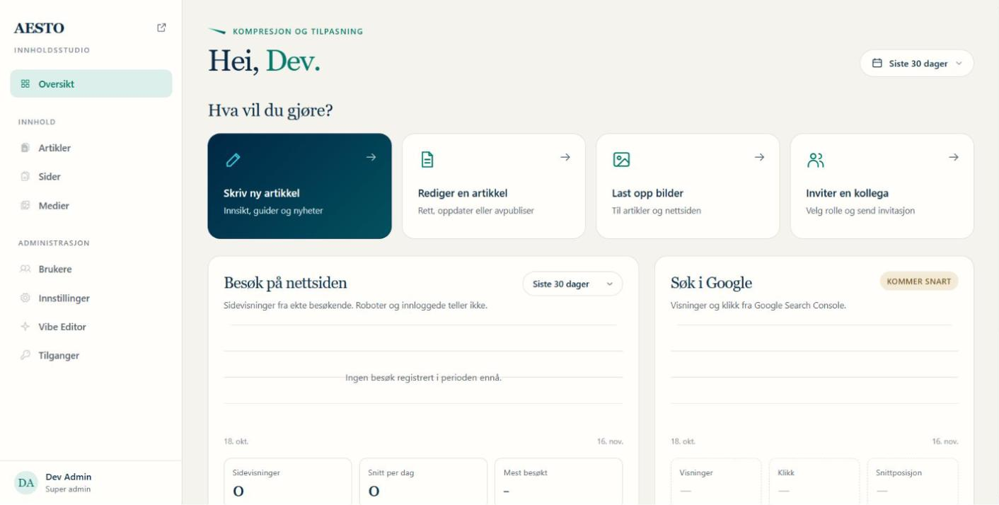
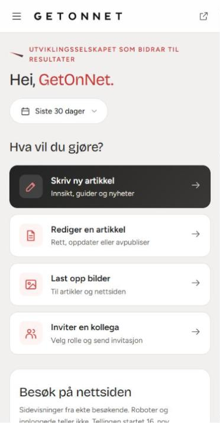
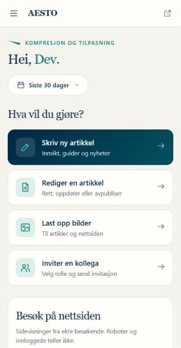
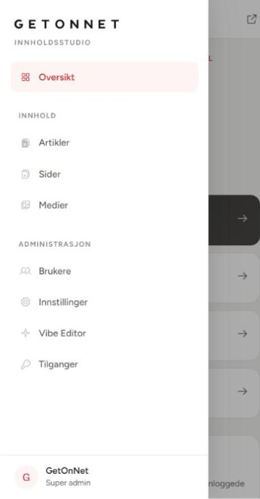
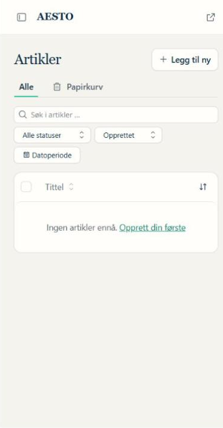
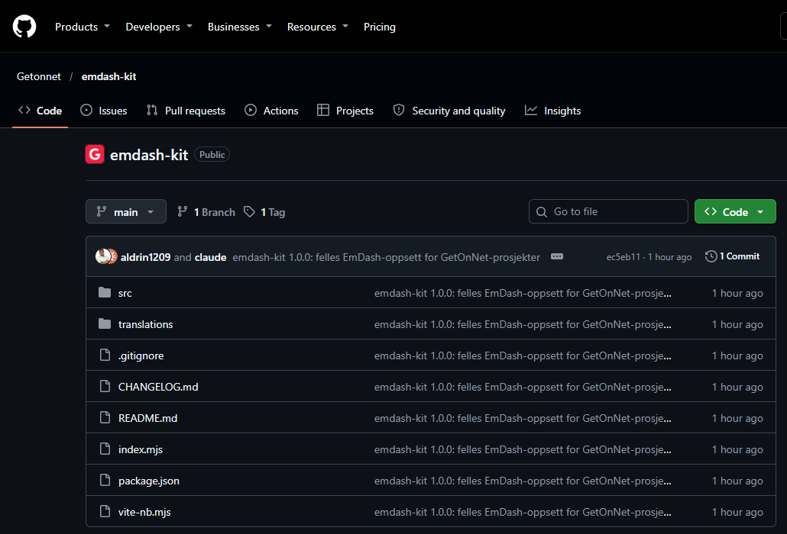
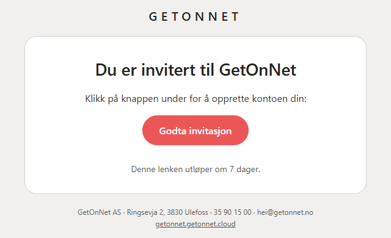

One shared EmDash setup for every client site. Improve it once, and every site gets it overnight, while each site keeps its own colours, logo, fonts and custom code.
Also included: branded login and invite emails · logout at midnight · buttons that open Gmail, Outlook or iCloud Mail · visit counter without cookies · about 2,500 Norwegian translations · Vibe Editor (optional) · main-domain redirect and HSTS · works on phones.

/admin: the dashboard with greeting, shortcuts based on the user's role, visit statistics and (further down) the article list.

EmDash admin in the site's colours and fonts, in Norwegian, with unused menu items hidden.

/admin/tilganger: five roles, which tabs each role sees, and "view as" another role.
Every site runs the exact same kit code. What makes them look different is one config per site: web/astro.config.mjs → defineKit({ … }). Change the colours there, deploy, and the dashboard, Tilganger, the EmDash admin and the emails all follow.

The dashboard from page 1 with AESTO's teal and navy palette and a serif heading font. No logo file set, so the kit shows the name as text.




Top bar with menu, logo and "view site" on every admin page; shortcuts as a list; fields big enough that iOS doesn't zoom. Colours come from the same config as desktop. AESTO shown with its colours on a test server; AESTO itself hasn't moved to the kit yet.
defineKit// web/astro.config.mjs (one per site) const kit = defineKit({ brand: { name: "GetOnNet", logo: "/…/logo.svg", // wide wordmark icon: "/…/icon.svg", // square favicon: "/…/favicon.svg", tagline: { nb: "…", en: "…" }, fontsCss: "/assets/css/admin-fonts.css", font: "Figtree", headingFont: "Bricolage Grotesque", colors: { /* table → */ }, }, prefix: "getonnet", // D1: never change email: { from, company, wordmark }, collections: { articles, pages }, hooks: "./src/emdash-kit.ts", translations: "./translations/…json", extraHiddenAdminPaths: ["/settings/email"], vibeEditor: true, });
Everything except prefix and collections has a default. No logo → name as text; no icon → logo; no email.from → EmDash's own emails.
| Page names | hooks → pageName(path): readable names in "Mest besøkt" |
| Own wording | translations: add or override Norwegian admin texts |
| Hide more menus | extraHiddenAdminPaths 1.1 |
| No Vibe Editor | vibeEditor: false 1.1: tabs disappear from Tilganger |
| Collection names | collections: slug, URL, nb/en names |
| Emails | email: sender, company line, wordmark |
| The website itself | Pages, templates, 404, tracking: in the site's src/, never in the kit |
| Token · where it shows | GetOnNet | AESTO |
|---|---|---|
| paper page background | F1F0EE | F5F3EE |
| card cards, menu, panels | FFFFFF | FFFEFB |
| ink · muted text, quieter text | ||
| accent buttons, chart, ticks | EB5757 | 01B699 |
| accentInk links, active menu text | C93838 | 00796A |
| wash active menu item, icons | FFF4F4 | DDEFEB |
| dark · darkAlt main shortcut, tooltips | ||
| onDarkAccent icons on dark | FF8F8F | 35C9D9 |
| line · lineStrong borders, hover |
Also: paperDeep, interact, label, accentHover, accentText (text on the accent, usually white), onDarkMuted, grid. Any you leave out use the kit's neutral defaults (blue accent).
Open Claude Code in the project folder, paste the prompt, and fill in the [brackets].
A · New siteCreate a new EmDash website for [client name] in this folder, using the shared setup @getonnet/emdash-kit (github.com/Getonnet/emdash-kit – read its README first). - Client: [name], [address · phone · email] (company line in emails) - Colours: [main #…, text #…, background #…] (or: take them from [URL]) - Fonts: [body font] and [heading font], self-hosted - Logo: [wide wordmark file] and icon: [square icon file] - Collections: [e.g. "artikler" at /artikler/ and "sider"] - Address: [client].getonnet.cloud, Cloudflare account Getonnet AS, D1 and R2 in Western Europe - GitHub repo: [Getonnet/repo-name] (empty, created by me) Set up deploys with GitHub Actions and the nightly "Oppdater EmDash" workflow, like getonnet-emdash. Don't change emdash-kit, aesto or trening-for-deg. Check /admin on desktop and phone width, run QA before publishing, and ask me before creating anything in Cloudflare.E · Static website → EmDash with the kit NEW
Turn the static website [live URL, or folder with the HTML files] into an EmDash site for [client name] in this folder, using @getonnet/emdash-kit (github.com/Getonnet/emdash-kit – read its README first), the same way getonnet-emdash was built from getonnet.no. - Mirror the site into site/ (not in git) and keep the design exactly as it is - Each page becomes a template + editable fields (headings, texts, images) in the "sider" collection; header, footer, menus and forms stay in the template - Same URLs as today, plus a 404 page and sitemap.xml - [Blog/news at /… → "artikler" collection] (or: no articles) - Kit config taken from the site: colours, fonts, logo and icon, company line - Visit counter (BESOK) on every page; tracking only on the real domain - noindex until launch; NETTSTED = [domain] when it goes live - Files over 25 MiB in R2; keep the Worker under 3 MB (large templates as static files) - Address: [client].getonnet.cloud, Cloudflare Getonnet AS, D1 + R2 in Western Europe - GitHub repo: [Getonnet/repo-name] (empty, created by me) Set up deploys and the nightly "Oppdater EmDash" workflow like getonnet-emdash. Compare every page with the original on desktop and phone before publishing, and ask me before creating anything in Cloudflare.
Works for any static site: an HTML export, a WordPress/Elementor site, Webflow, or files in a folder. Editors can then change texts and images in EmDash while the design stays the same.
Same as before: open Claude Code in the project folder and fill in the [brackets].
B · Move an existing EmDash site onto the kitMove [project, e.g. C:\Users\geton\aesto] over to the shared setup @getonnet/emdash-kit (github.com/Getonnet/emdash-kit – read its README first), the same way getonnet-emdash uses it. - Keep the project's own colours, fonts, logo, name and company details in the defineKit config - Use the same prefix as the project's current D1 tables (e.g. "aesto") so data, visits and roles carry over - Delete the files the kit now provides (middleware, /admin, APIs, email plugin, translations), but keep everything specific to the site - Add the nightly "Oppdater EmDash" workflow like getonnet-emdash - If something in the project is better than in the kit, propose it as a new kit version instead You have permission to change [project] for this. Run QA locally before pushing, and show me what changes before it's published.C · Improve the kit (all sites)
In emdash-kit (C:\Users\geton\emdash-kit): [describe the change].
Test it in getonnet-emdash with a local copy first (desktop and phone width),
then release it as a new patch/minor version (version in package.json + CHANGELOG
+ annotated tag) and push.
D · Change one site's colours, logo or fonts NEW
In [project, e.g. getonnet-emdash], change the look in web/astro.config.mjs → defineKit brand: [new colours / take them from URL / new logo file / new fonts]. Only change this site, not emdash-kit. Fill in all colour tokens and check contrast. Check /admin, /admin/tilganger and /_emdash/admin on desktop and phone width locally, then push (it deploys itself).
| You have … | Use |
|---|---|
| Nothing yet: a brand new client site | A · new site |
| A static site (HTML files, WordPress/Elementor, Webflow …) that should become editable | E · static website → EmDash with the kit |
| An EmDash site with its own copy of the admin code (aesto, trening) | B · move onto the kit |
| Something every site should get | C · improve the kit, release a version |
| One site needs new colours, logo or fonts | D · change that site's defineKit only |
CLOUDFLARE_API_TOKEN and paste the token./_emdash/admin and create your account with a passkey. Until then, whoever opens it first becomes the admin.| You do this in emdash-kit | Reaches the sites? |
|---|---|
Commit and push to main | No. Sites follow version tags, not commits. |
Release a patch or minor version: git tag -a v1.1.1 -m "v1.1.1", then git push --follow-tags | Yes, automatically at 02:17 UTC, or right away with Actions → "Oppdater EmDash" → Run workflow. Live about a minute after the bot's commit. |
Release a major version: v2.0.0 | No. Each site is updated by hand. |
Change a site's own defineKit (colours, logo …) | Only that site, as soon as you push it. |
The nightly Oppdater EmDash workflow updates the kit, EmDash and Vibe Editor within the same major version, builds the site, and only commits and deploys if the build passes. You'll see it as a commit by github-actions[bot].
-a. A plain git tag is not sent by --follow-tags, so the release silently never reaches GitHub.
github.com/Getonnet/emdash-kit is public, so sites install it without a token.

Login and invite emails get each site's name, button colour and company line.
defineKitversion in package.json (the kit reads it from there) and update the CHANGELOGnode_modules; the next update overwrites themdefineKit or a hook.env, tokens or the 226 MB site/ copy-a (not only pushed) and that the tag isn't a new major version. Then run "Oppdater EmDash" by hand.| Shared kit | github.com/Getonnet/emdash-kit · local: C:\Users\geton\emdash-kit |
| A site's look and settings | web/astro.config.mjs → defineKit({ … }) |
| A site's fonts | web/public/assets/css/admin-fonts.css (set as fontsCss) |
| A site's custom hooks | web/src/emdash-kit.ts (e.g. page names on the dashboard) |
| Deploy / nightly update | .github/workflows/deploy.yml · oppdater-emdash.yml |
| Example site | getonnet-emdash.getonnet.cloud · github.com/Getonnet/getonnet-emdash |